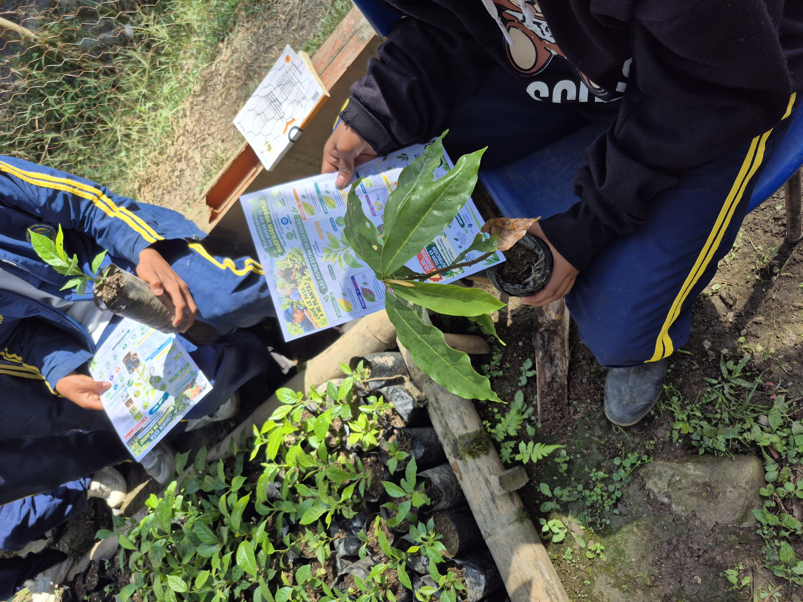
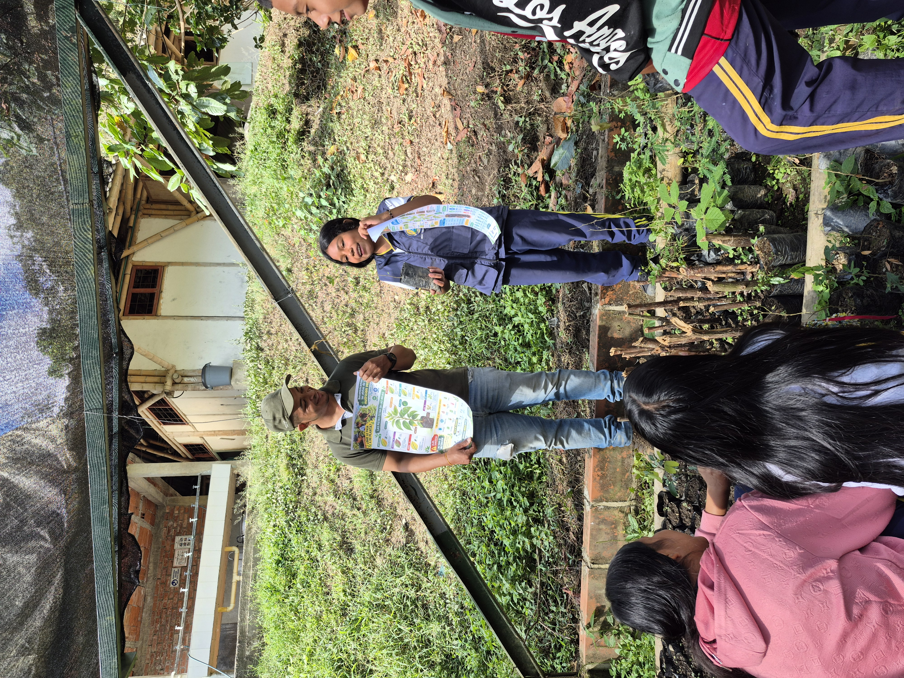
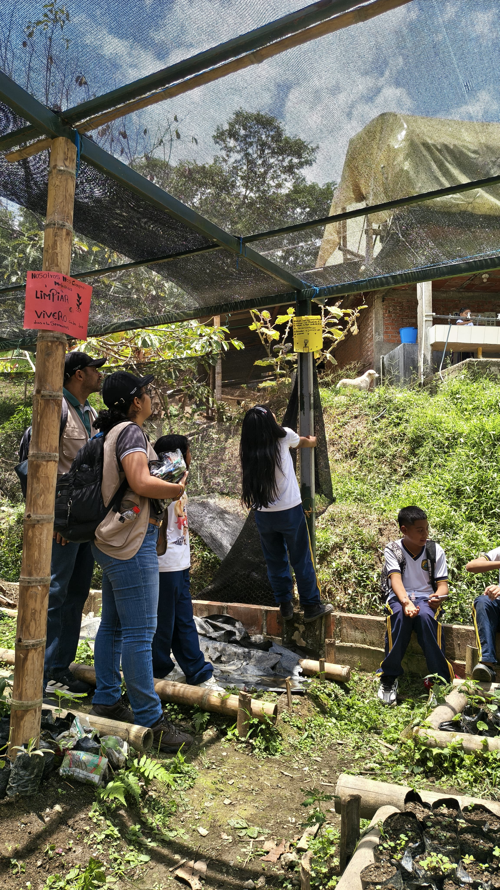
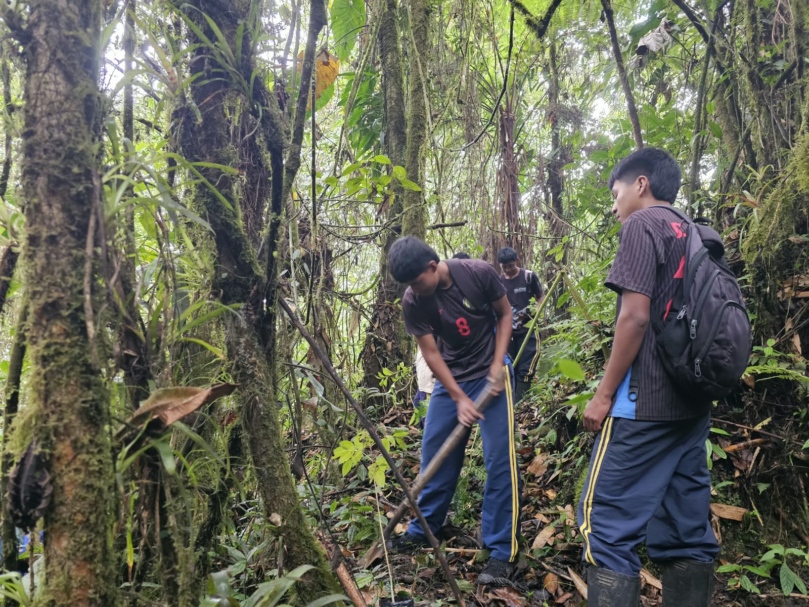
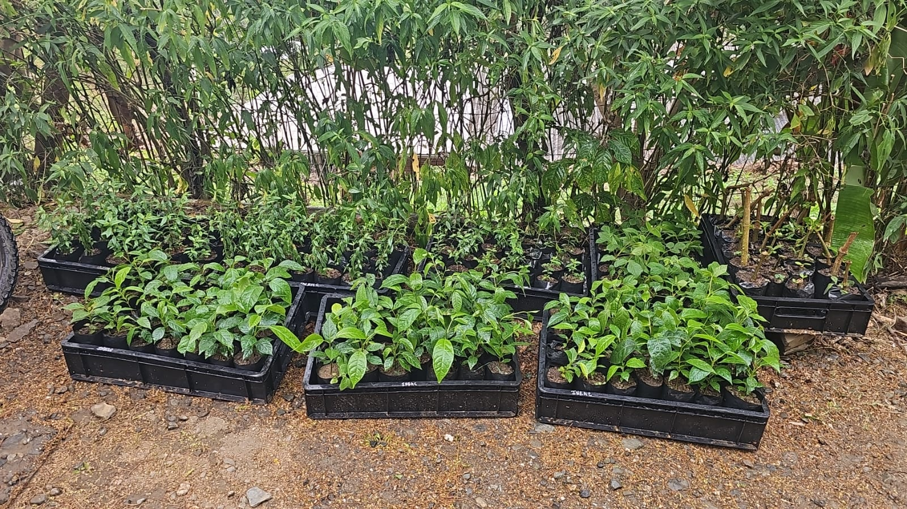
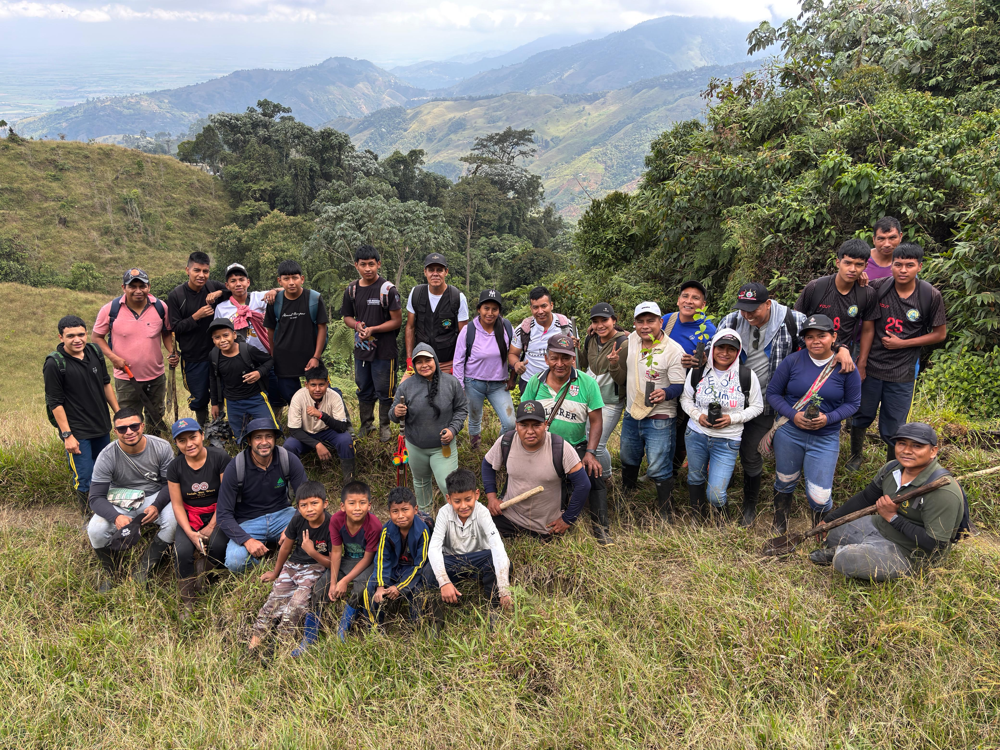

🌱 Componente técnico
Nutrición y sanidad vegetal: Jornada práctica de observación y reconocimiento de señales asociadas a deficiencias nutricionales, plagas y enfermedades en las plantas del vivero. Se fortaleció la capacidad de identificar posibles causas y tomar decisiones de manejo a partir de la observación.
👥 Componente social
Apropiación individual y colectiva del vivero: Espacio participativo orientado a fortalecer el sentido de pertenencia y la corresponsabilidad frente al vivero. Los participantes reconocieron sus capacidades, aportes y responsabilidades, y construyeron acuerdos para contribuir al cuidado y sostenibilidad del proceso.
🙋 Participación en la jornada
17 personas participantes
Detalle de participación
Niñez
Menores de 12 añosAdolescencia
De 12 a 17 añosPersonas adultas
18 años o másParticiparon 16 adolescentes y el docente acompañante.
📷 Registro fotográfico



🌿 Otras acciones y avances del mes
🌳 Jornada de siembra
25 de septiembre de 2026En la vereda Palo Negro, Resguardo Indígena Páez del municipio de Corinto, 60 personas de la comunidad local y de la comunidad educativa de la institución participaron en la siembra de 450 plantas de especies nativas, entre las cuales destacan nacedero, guadua, cedro rosado, flor amarillo, guamo y gualanday. La jornada contó con la participación del vivero Amarú Planet, que también hace parte de la Red.
La jornada promovió la protección de nacimientos de agua, el cuidado de Uma Kiwe y el aprendizaje práctico sobre las especies nativas y su importancia para el territorio.


